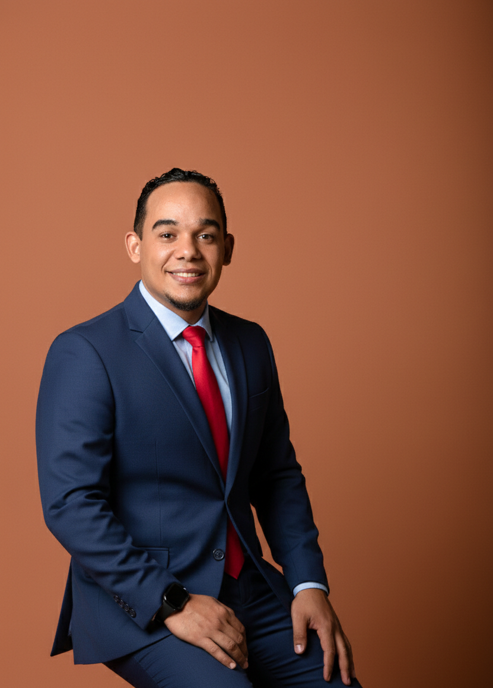

Diseño para redes
Campañas, carruseles, anuncios y piezas adaptadas a cada plataforma.
- Flyers y carteles
- Carruseles y publicaciones
- Campañas promocionales
Diseñador gráfico + editor de video
Diseño y edito contenido que hace que tu marca, ministerio o proyecto se vea profesional, comunique con claridad y conecte con su audiencia.

Soluciones creativas
Un servicio enfocado en objetivos: atraer, comunicar y construir una imagen reconocible.
Campañas, carruseles, anuncios y piezas adaptadas a cada plataforma.
Composición y retoque pensados para comunicar en segundos y despertar interés.
Montaje, ritmo, color y narrativa para contenido profesional y memorable.
Textos y gráficos en movimiento que convierten un mensaje en experiencia.
Portafolio de diseño
Afiches, miniaturas y contenido promocional creados para captar atención y organizar mensajes con jerarquía visual.
Edición audiovisual
Proyectos editados para podcasts, entrevistas, eventos, campañas y contenido digital. Pulsa play para ver cada pieza.
Casos de trabajo
Diseño y edición conectados con una necesidad concreta de comunicación.
Necesidad: presentar temas e invitados con fuerza visual.
Solución: sistema de miniaturas, composición fotográfica y edición de entrevistas.
AQUÍ ESTÁ LA RESPUESTA · ALLENTOWNNecesidad: comunicar fechas, invitados y propósito sin perder impacto.
Solución: afiches de campaña con jerarquía, retoque y versiones sociales.
EVENTOS · IGLESIAS · CONFERENCIASNecesidad: mantener una programación con imagen consistente.
Solución: portadas, promociones y piezas audiovisuales adaptadas a cada plataforma.
RADIO · REDES · VIDEOCómo trabajaremos
Conozco tu objetivo, público, materiales y referencias.
Acordamos alcance, formatos, revisiones y calendario.
Diseño o edito cuidando mensaje, ritmo y coherencia.
Recibes los archivos finales adaptados a tus plataformas.
¿Listo para convertir tu idea en contenido profesional?
Comenzar por WhatsApp ↗Sobre mí
Soy Jhonly Santos, diseñador gráfico y editor de video con más de siete años convirtiendo ideas en contenido visual.
Combino composición, color, ritmo y narrativa para entregar piezas que respetan la identidad de cada cliente y conectan con su público. Trabajo desde el concepto hasta la versión final.
Experiencia aplicada
Cuando dispongamos de testimonios autorizados, esta sección podrá mostrar las experiencias directas de los clientes.
Preguntas frecuentes
Respuestas claras para que sepas qué esperar durante el proyecto.
Una descripción del proyecto, objetivo, público, textos, logotipos, fotografías o videos disponibles y referencias del estilo que buscas.
Sí. Todo el proceso puede realizarse de forma remota por WhatsApp, correo y reuniones virtuales.
Depende del alcance, duración y complejidad. Antes de comenzar recibirás un calendario de trabajo y una fecha de entrega clara.
Sí. La cantidad y alcance de las revisiones se acuerdan antes de iniciar para que ambas partes tengan expectativas claras.
Sí. Puedo adaptar diseños y videos para YouTube, Instagram, Facebook, pantallas, presentaciones y otros medios.
Sí. Puedes contratar una solución integral para mantener coherencia entre la imagen promocional y el contenido audiovisual.
¿TIENES UN PROYECTO EN MENTE?